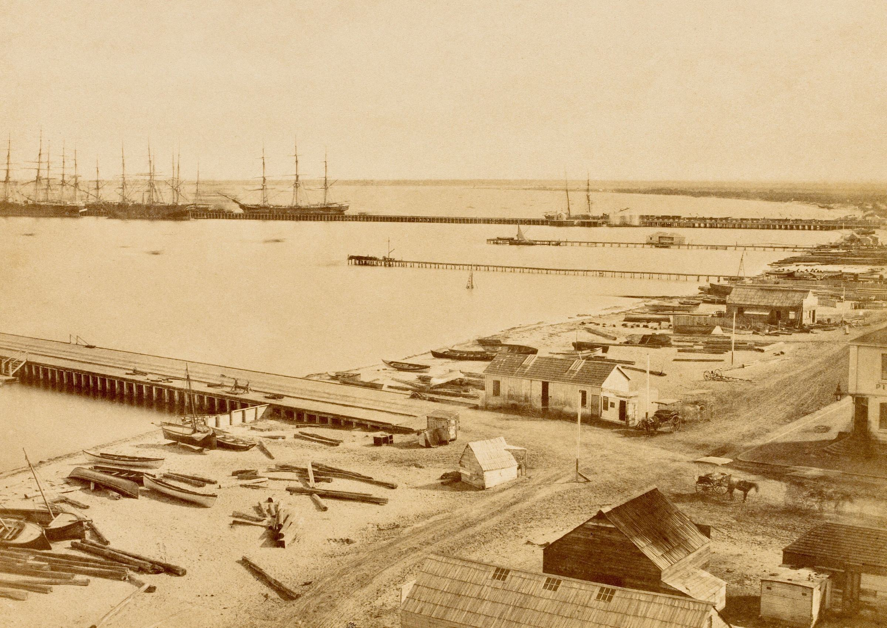
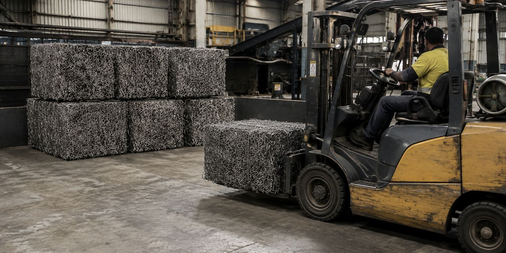
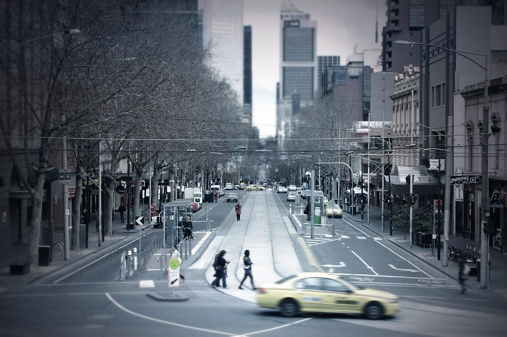
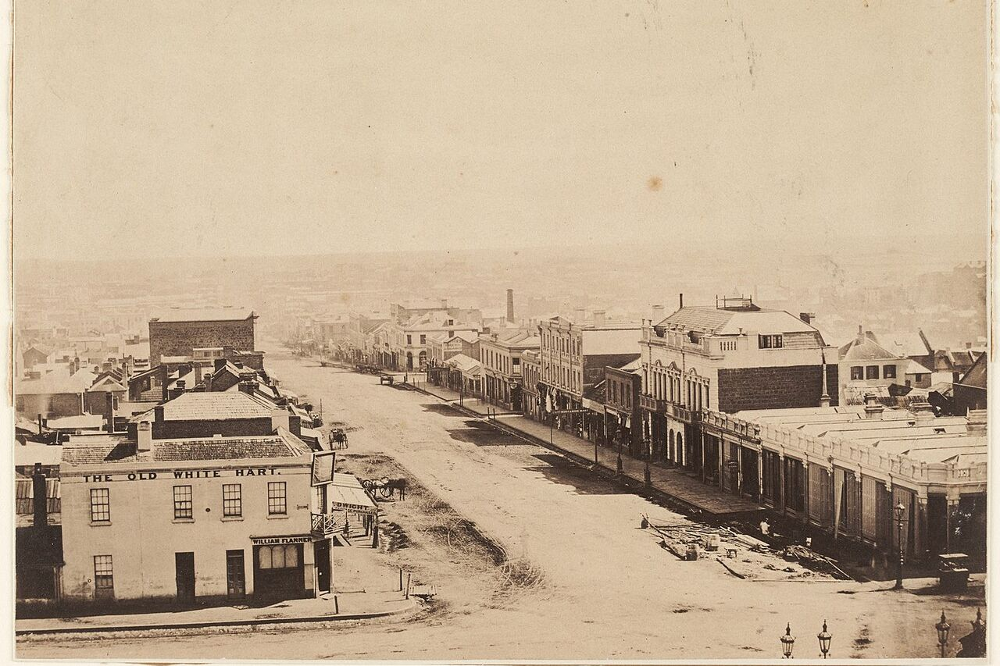

Melbourne, about 1858
Before it was called recycling, it was called a marine store.
Marine store dealers bought old metal, rags and glass and sold it on. One of them, Robert Hyde & Co., shipped it to England by the ton.
The railway pier, Sandridge, about 1858. Richard Daintree and Antoine Fauchery. State Library Victoria, public domain.


East Melbourne, 1862
The sign reads “R. Hyde & Co.”
Hyde’s Marine Store is listed at 11 Albert Street, East Melbourne. A year later The Age calls it Melbourne’s principal rag exporter.

Today
The name is back. So is the trade.
Robert Hyde & Co. is a new scrap metal business that has taken up the name. We buy steel, copper, brass, aluminium, cars and farm metal, and pay by EFT.
The trade today
What we buy
Steel, copper, brass, aluminium and whole items made of them, priced by metal, grade and weight on the day.
Steel and iron
Whitegoods, hot water services, roofing iron, shelving, pipe and offcuts→Copper, brass and aluminium
Pipe, wire, fittings, window frames, stainless sinks→Cars, trailers and caravans
Collected by tilt tray, with proof of ownership→Machinery and farm metal
Old equipment, containers, site offices, wheels→

How selling works
Start a requestTell us what you have
Send a few details and photos online. It takes about two minutes.
Get a price and a time
We confirm a guide price and book a pickup or a drop-off.
Weighed, then paid by EFT
Every load is weighed. Bring ID, which Victorian law requires us to record. Cash for scrap metal is banned.

Trade and business
For workshops, builders, farms and sites
Regular metal coming off your site? We can place bins, collect on a schedule and send a statement for every load.
From the archive
The trade was here first
Robert Hyde & Co. was buying and shipping Melbourne’s cast-offs a century and a half before anyone called it recycling.
500tons a year
of rags, zinc and broken glass, sorted in Melbourne and shipped to England by sail. The Age, 19 January 1863. That’s about the weight of 330 family cars.
The car comparison is ours, at about 1.5 tonnes a car. Read the report on Trove.
Same street, 168 years apart
Bourke Street, looking west from Spring Street. Drag the handle to travel between about 1858 and today.

